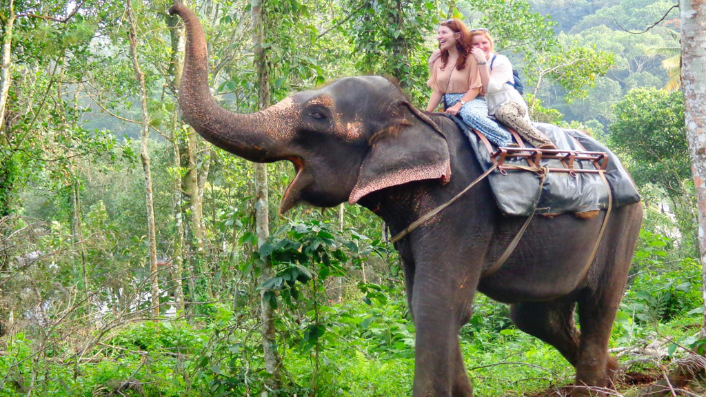
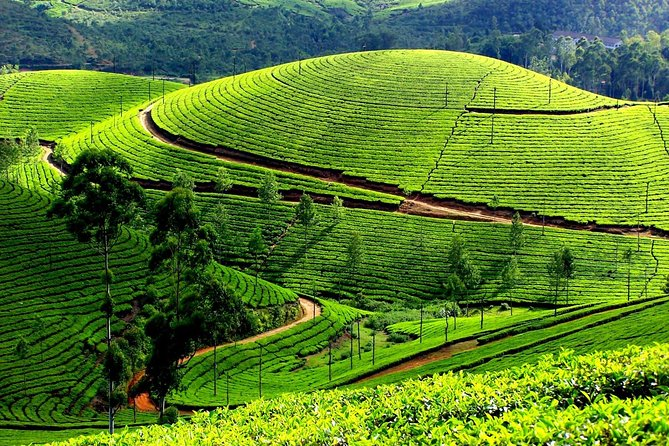
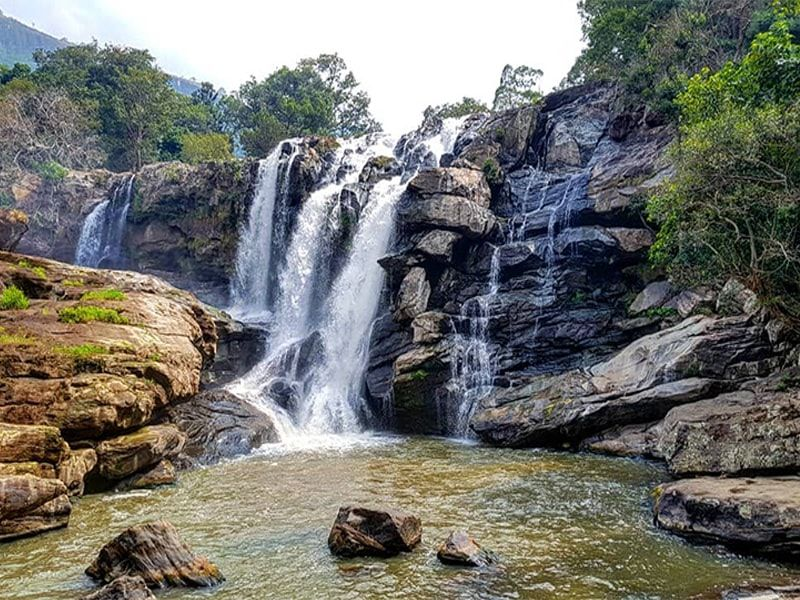
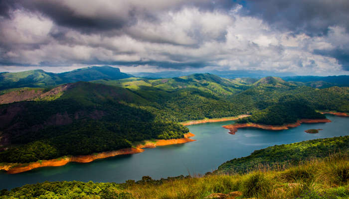

Thekkady

Munnar

Idukki Arch Dam

Thoovanam Waterfalls

Idukki which is located in the Western Ghats is considered as the second largest district among the 14 districts in Kerala. The word Idukki means ‘Narrow Gap’ in the local language which is Malayalam. It also means ‘Narrow Gorge’. ‘Idukki Dam’ is considered as the largest Arch Dam in Asia. The water flows between two huge rocks that are massive in size which are named as Kuravan and Kurathi. The history behind these two rocks date back to the Ramayana period
There are many places to visit in and around the Idukki district. Munnar which acted as the British government’s summer resort is one among the key places of interest. Vagamon is a hill station that lies towards the South of Idukki and is an excellent for people who love adventure sports. Ramakkalmedu is both a hamlet and hill station in the Idukki district and is located at a height which is 3500 feet above the sea level. The hill station has lush green grass that grows in Shola forest laced out by bamboo forests that are sporadic in nature. The other important tourist spot is Thekkady which lies in between Kerala and Tamilnadu border. Marayur which grows sandalwood trees in abundance is found near Idukki in the slopes of Western Ghats.
Idukki has many Wildlife Sanctuaries which are world famous. Some such wildlife sanctuaries that offer a unique experience to tourists are Thattekad Bird Sanctuary, Eravikulam Wild Life Sanctuary, Periyar Tiger Reserve, Periyar National Park and Wildlife Sanctuary, Pampaduumshola National Park and Kurinjimala Sanctuary among the many others in the region.
Idukki has many protected regions which take care of the flora and fauna to safeguard the state’s greenery. Some such protected areas are Periyar Tiger Reserve, the Kurinjimala Sanctuary, Chinnar Wildlife Sanctuary, Eravikulam National Park, Anamudi Shola National park, Pampadum Shola National Park and Thattekad Bird Sanctuary among the many others. Through making these areas protected ones, many endangered speices like Nilgiri Wood pigeon, Sambar Deer, Niligiri Tahr, Purple Frog, Tiger, Gaur, Elephant and Neelakurinji are protected from extinction
Idukki District came into existence on the 26th January, 1972 as per the notification No. 54131/C2/71/RD dated the 24th January, 1972, carving out Devikulam, Udumbanchola and Peerumade Taluks from erstwhile Kottayam District and Thodupuzha Taluk (excluding Kalloorkad Village and portion of Manjalloor Village included in Kalloorkad and Manjalloor Panchayats) of erstwhile Ernakulam District. The jurisdiction was slightly altered by a subsequent notification No.7754/C2/72/RD dated the 14th February, 1972. The name Idukki was derived from the word ‘Idukku’ which means a gorge.The Dutch East India Company was attracted by the enormous growth of pepper in high ranges. According to the formal treaty signed on June 16, 1664, Dutch East India Company had trade contracts with Thekkumkur Rajas on spices, cinnamon, opium, etc. Manavikramakulasekhara Perumal, the Pandya King with his family had to imigrate to Kerala and were settled in Vadakkumkur as refugees. With the help of Vadakkumkur Rajas, the Pandya King purchased the land lying to the West of the Western Ghats known as Poonjar from Thekkumkur Rajas.